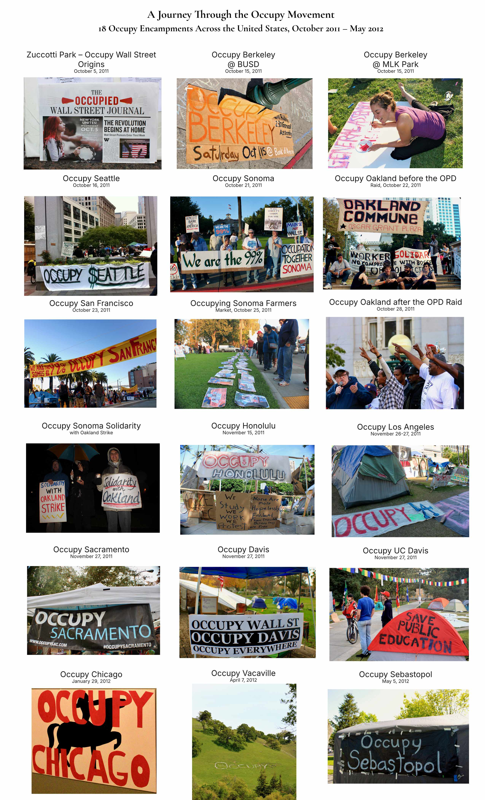

Media Resources
Press
Press materials for journalists, curators, educators and publishers
Occupy Wall Street Photos
Occupy Wall Street Photos is a chronological, single-photographer documentary archive of the Occupy movement.
Between October 2011 and May 2012, Vance Petrunoff documented 18 Occupy encampments across the United States, from New York to California and Hawaii. The archive records demonstrations, assemblies, handmade signs, community kitchens, libraries, volunteers, music, art and everyday life within the movement.
For additional information, please download the press materials below. High-resolution photographs are available upon request.
Press Kit
Published Press Release
Media Coverage
- Exhibition Traces the History of the Occupy Wall Street Protest Movement — Bulgarian News Agency (BTA), August 13, 2026 — In Bulgarian
- Vance Petrunoff Captures the Voices of American Protesters in an Exhibition — Impressio, August 27, 2026 — In Bulgarian
- Fifteen Years After Occupy Wall Street: Vance Petrunoff’s “WE ARE THE 99%” at ONE Gallery — Жената днес, August 26, 2026 — In Bulgarian
A Journey Through the Occupy Movement
A chronological overview of 18 Occupy encampments documented between October 2011 and May 2012.

Related Resources
Archive
- Complete Flickr Archive — 18 Occupy Encampments
- Occupy USA — Softcover Photobook (Blurb)
- Occupy USA — Digital Edition (Apple Books)
Historical Context
Visual Culture
Media Contact
Vance Petrunoff
Occupy Wall Street Photos
Interviews, publication requests, exhibition inquiries and high-resolution image requests are welcome.